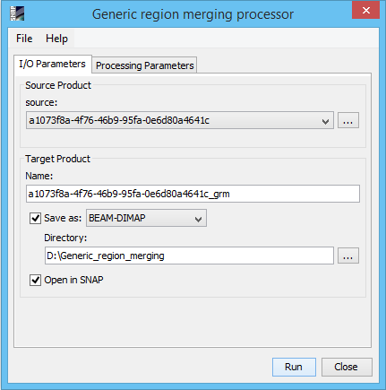
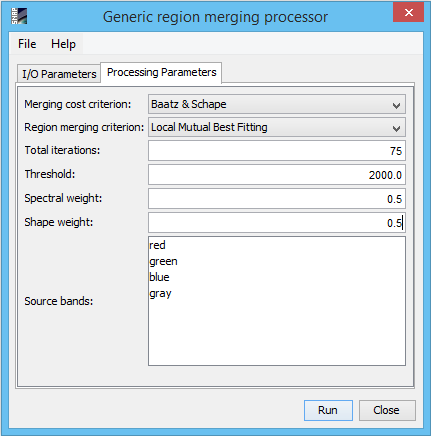

| Generic Region Merging Processor | |
The Generic Region Merging Processor allows the segmentation of images of arbitrary size. It is based on the article A Scalable Tile-Based Framework for Region Merging Segmentation written by Pierre Lassale, Jordi Inglada, Julien Michel, Manuel Grizonnet, and Julien Malik.
The memory required to process the images may be very high and therefore leads to unfeasibility on slow computers.
The region-merging algorithms starts by assigning a different segment to each pixel of the image. The algorithm consists of merging adjacent segments until a criterion is fulfilled. At each iteration, merging costs are computed between adjacent segments.
A segment and its best adjacent segment are merged, if their merging cost is smaller than a threshold. The merging process stops when there are no more possible fusions of segments. The number of segments may be different for each merging cost criterion.
Source ProductSpecify the source product which will be used to compute the segmentation. Target ProductName: Used to specify the name of the target product.
Save as:
Used to specify whether the target product should be saved to the file system. The
combo box presents a list of file formats.
The text field allows to specify a target directory. Open in SNAP: Used to specify whether the target product should be opened in the Sentinel Toolbox. When the target product is not saved, it is opened in the Sentinel Toolbox automatically. |
 |
|
Merging cost criterion: Specify the type to compute the cost between adjacent segments. The merging costs are based on a homogeneity criterion and can represent not only how two similar segments are but also how homogeneous the resulting larger segment would be. Region merging criterion: Specify for a given segment the way to choose the adjacent segment to be merged with. Total iterations: Specify the total number of iterations. The higher the number of iterations, the lower the number of segmentation objects is. On a segmentation step the number of segmentation objects may be reduced by merging the adjacent segments based on the merging cost criterion and region merging criterion. Threshold: Specify the threshold which is compared with the merging cost. This threshold avoids undersegmentation. The higher the value of the threshold the least chances of undersegmentation. Spectral weight: Specify the spectral weight. Shape weight: Specify the shape weight. Source bands: Specify the source bands for the computation. NOTE: The threshold, spectral weight, shape weight may vary according to the pixel values of the raster. The standard values for spectral weight, shape weight is 0.5 and for threshold is 100. Sometimes to detect more precisely the segmentation objects the processor needs to execute several times with different parameter values. |
 |